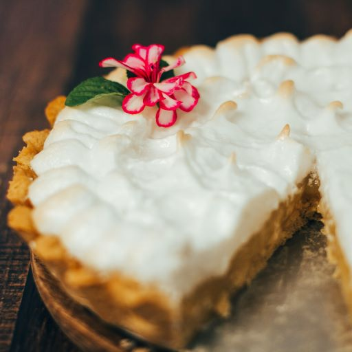

The Leaky Cauldron
Famous Wizzard Recipes

Treacle Tart
Harry Potter's favorite dessert!
Servings
8
Difficulty
Intermediate
Cost
$$
Ingredients
- 1 buttery pie dough
- 1 egg
- 2 tbsp of heavy cream
- 1 cup of golden syrup
- 1 lemon
- 1 cup of breadcrumbs
- 1 bottle of whipped cream
Steps
- Preheat oven to 380F.
- Place pastry dough in pie baking dish and put in oven when hot.
- Zest the lemon and then squeeze to get the juice.
- Put the lemon zest, juice and golden syrup in a saucepan over medium heat.
- When hot, turn off the fire, add the breadcrumbs, mix and let sit for a few minutes.
- Beat the egg and cream until combined and add to the saucepan.
- Pour saucepan content in pie crust and bake at 380F for around 20minutes
- Let cool down before adding whipping cream on top
Back to top